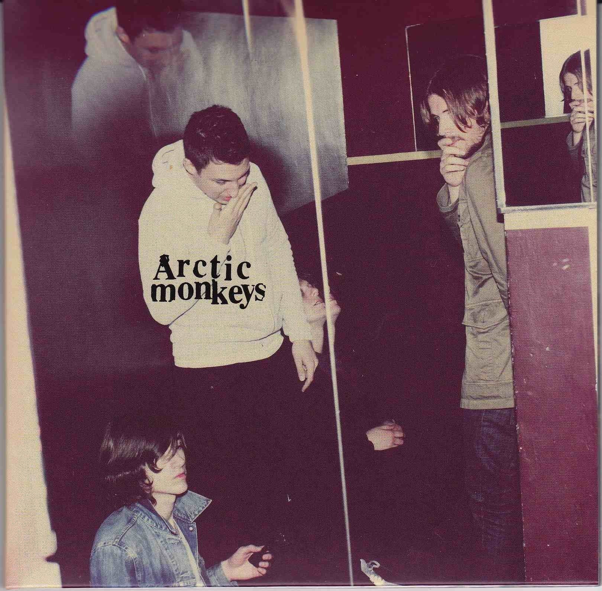

Arctic Monkeys
Os Arctic Monkeys é uma banda de rock inglesa formada em Sheffield em 2002. A banda é composta por Alex Turner (vocal principal, guitarra, teclado), Jamie Cook (guitarra, teclado), Nick O'Malley (baixo, backing vocals) e Matt Helders (bateria, backing vocals). Eles ganharam destaque com seu álbum de estreia "Whatever People Say I Am, That's What I'm Not" em 2006, contém um total de 13 músicas, que se tornou o álbum de estreia mais vendido na história da música britânica.
Whatever People Say I Am, That's What I'm Not (2006)

Whatever People Say I Am, That's What I'm Not é o álbum de estreia da banda Arctic Monkeys, de Sheffield, Inglaterra, e foi lançado em 23 de janeiro de 2006. Ele foi gravado nos Chapel Studios, em Lincolnshire, antes da primeira turnê da banda. Tornou-se o álbum de estreia vendido mais rapidamente no Reino Unido, com 360.000 cópias somente na primeira semana. É disco de platina quádruplo e ganhador do Mercury Prize de 2006 no Reino Unido.
Faixas
1. "The View from the Afternoon" 3:38
2. "I Bet You Look Good on the Dancefloor" 2:53
3. "Fake Tales of San Francisco" 2:57
4. "Dancing Shoes" 2:21
5. "You Probably Couldn't See for the Lights but You Were Staring Straight at Me" 2:10
6. "Still Take You Home" (Turner, Jamie Cook) 2:53
7. "Riot Van" 2:14
8. "Red Light Indicates Doors Are Secured" 2:23
9. "Mardy Bum" 2:55
10. "Perhaps Vampires Is a Bit Strong But..." 4:28
11. "When the Sun Goes Down" 3:20
12. "From the Ritz to the Rubble" 3:13
13. "A Certain Romance" 5:31
Favourite Worst Nightmare (2007)

É o segundo álbum de estúdio da banda britânica Arctic Monkeys, lançado em 2007. Foi altamente aclamado pela crítica e pelos fãs e teve um grande impacto na cena musical na época. O álbum apresenta um som mais maduro em comparação com o álbum de estreia da banda, "Whatever People Say I Am, That's What I'm Not". Ele contém músicas que mostram a habilidade da banda em criar letras inteligentes e cativantes, combinadas com riffs de guitarra energéticos e batidas pulsantes. Vendeu 85 mil cópias no Reino Unido somente no primeiro dia de venda. Nos Estados Unidos o disco vendeu 44 mil cópias na primeira semana, mais que seu antecessor.
Faixas
1. Brianstorm 2:50
2. Teddy Picker 2:43
3. D Is for Dangerous 2:16
4. Balaclava 2:49
5. Fluorescent Adolescent (Turner, Johanna Bennett) 3:03
6. Only Ones Who Know 3:02
7. Do Me a Favour 3:27
8. This House Is a Circus 3:09
9. If You Were There, Beware 4:34
10. The Bad Thing 2:23
11. Old Yellow Bricks (Turner, Jon McClure) 3:11
12. 505 4:13
Faixas bônus da edição japonesa
13. Da Frame 2R 2:20
14. Matador 4:57
Humbug (2009)
É o terceiro álbum de estúdio da banda britânica Arctic Monkeys, lançado em 2009. Este álbum marca uma mudança significativa no som da banda em comparação com seus dois primeiros álbuns.
"Humbug" apresenta uma sonoridade mais sombria, mais experimental e mais madura em comparação com os álbuns
anteriores da Arctic Monkeys. O álbum mostra uma maior exploração de texturas e atmosferas, bem como uma
abordagem mais complexa em termos de arranjos musicais.
Recebeu críticas geralmente positivas e consolidou ainda mais a reputação dos Arctic Monkeys como uma das
bandas
mais interessantes e talentosas de sua geração.
O lançamento do álbum precedeu a apresentação da banda nos festivais de Reading e Leeds, no final daquela
semana. Chegou ao topo da parada de álbuns britânicos e foi certificado como platina no Reino Unido.
Apesar de não receber a mesma aclamação que seus anteriores Whatever People Say I Am, That's What I'm Not
(2006)11. "Suck It and See" 3:46
e Favourite Worst Nightmare (2007), Humbug recebeu uma resposta positiva, com os críticos observando a
banda expandindo seu som e temas, enquanto a sonoridade do álbum foi reconhecida como mais sombria do que as
gravações anteriores mais otimistas da banda.
Faixas
1. "My Propeller" 3:27
2. "Crying Lightning" 3:43
3. "Dangerous Animals" 3:30
4. "Secret Door" 3:43
5. "Potion Approaching" 3:32
6. "Fire and the Thud" 3:57
7. "Cornerstone" 3:17
8. "Dance Little Liar" 4:43
9. "Pretty Visitors" 3:40
10. "The Jeweller's Hands" 5:42
11. "Sketchead" 2:02
Faixas bônus da edição japonesa
12. "I Haven't Got My Strange" 1:29
13. "Red Right Hand" 4:19
Suck It and See (2011)
Suck It and See é o quarto álbum de estúdio da banda inglesa Arctic Monkeys, lançado em 6 de junho de 2011 no
Reino Unido e em 7 de junho nos Estados Unidos, seguido pela turnê norte-americana de 2011. A banda
trabalhou com o produtor James Ford neste álbum, prometendo um estilo mais vintage.
Nos Estados Unidos, o título foi coberto com uma etiqueta em alguns supermercados. Em entrevista com a rádio
britânica XFM, o vocalista Alex Turner disse "Eles acham que é rude, desrespeitoso e estão colocando um
adesivo sobre ele na América em algumas lojas, das grandes." Matt Helders explicou que "Suck It And See"
(literalmente "chupe e veja") não possui nenhuma conotação sexual na Inglaterra; trata-se de uma expressão
britânica que significa "tentar algo novo". Embora tenha previsto que o termo pudesse ser mal interpretado
em outras regiões do mundo, a banda optou por manter o título.
Faixas
1. "She's Thunderstorms" 3:55
2. "Black Treacle" 3:35
3. "Brick by Brick" 2:59
4. "The Hellcat Spangled Shalalala" 3:00
5. "Don't Sit Down 'Cause I've Moved Your Chair" 3:04
6. "Library Pictures" 2:22
7. "All My Own Stunts" 3:52
8. "Reckless Serenade" 2:43
9. "Piledriver Waltz" 3:24
10. "Love Is a Laserquest" 3:12
11. "Suck It and See" 3:46
12. "That's Where You're Wrong" 4:17
13. "The Blond-O-Sonic Shimmer Trap" 3:28
AM (2013)
.jpeg)
Lançado no começo de setembro de 2013, o álbum estreou em primeiro lugar nas paradas de sucesso do Reino
Unido, vendendo 157 mil cópias em sua primeira semana. Este foi o quinto disco do Arctic Monkeys a ocupar o
primeiro lugar dos mais vendidos na Inglaterra O AM também estreou em sexto lugar nas paradas dos
Estados Unidos, com mais de 42 mil unidades comercializadas naquele país em sua primeira semana de
vendas.
O AM foi muito bem recebido pela crítica especializada. No site Metacritic, que dá notas de 0 a 100 baseado
em diversas resenhas, o álbum recebeu uma nota 81, baseado em 36 analises críticas. Simon Harper, da
revista Clash, "com inspirações de hip-hop com rock de titãs, este disco é construido sobre batidas
portentosas que são obscuras e intimidadoras, ainda impiamente emocionante". Uma publicação na Time Out
afirmou que "uma das melhores bandas britânicas atuais acabou de ficar melhor com um novo jeito, inesperado
mas bem vindo. A revista NME afirmou que este álbum é "absolutamente o melhor álbum de sua carreira".
Faixas
1. "Do I Wanna Know?" 4:32
2. "R U Mine?" 3:20
3. "One for the Road" 3:26
4. "Arabella" 3:27
5. "I Want It All" 3:04
6. "No.1 Party Anthem" 4:03
7. "Mad Sounds" Turner, Alan Smyth 3:35
8. "Fireside" 3:01
9. "Why'd You Only Call Me When You're High?" 2:42
10. "Snap Out of It" 3:12
11. "Knee Socks" 4:17
12. "I Wanna Be Yours" 3:04
Tranquility Base Hotel & Casino (2018)
É o sexto álbum de estúdio da banda inglesa de indie rock Arctic Monkeys. Foi lançado em 11 de maio de 2018
pela Domino Records, cinco anos após o lançamento de seu antecessor, AM (de 2013). Foi
produzido pelo
colaborador de longa data da banda, o músico James Ford, e também pelo vocalista e guitarrista do grupo,
Alex Turner.
Segundo a banda, o vocalista Alex Turner compôs o álbum praticamente sozinho em um estúdio montado em sua
casa, em um piano que ganhou de presente em seu aniversário de 30 anos. A principal temática aqui não são
mais as noites de bebedeira, os casacos de couro e as mulheres vistas no AM, e sim uma temática espacial e
futurista, misturado com vintage, influenciada por música dos anos 70.
O ritmo também mostrou-se diferente. Agora mais lento, dando mais espaço para Turner construir as letras sem
ter de se preocupar com violentos solos de guitarra. “Eu recebi um piano quando fiz 30 anos... Sentar-me ao
piano ajudou-me a inventar um novo ângulo para abordar as composições, não apenas a música, mas as letras
também – se é que isso faz sentido.”, disse Turner.
Faixas
1. "Star Treatment" 5:54
2. "One Point Perspective" 3:28
3. "American Sports" 2:38
4. "Tranquility Base Hotel & Casino" 3:31
5. "Golden Trunks" 2:53
6. "Four Out of Five" 5:12
7. "The World's First Ever Monster Truck Front Flip" 3:00
8. "Science Fiction" 3:05
9. "She Looks Like Fun" 3:02
10. "Batphone" 4:31
11. "The Ultracheese" 3:37
The Car (2022)
A foto da capa é uma fotografia do baterista da banda, Matt Helders, tirada em Los Angeles, nos Estados Unidos.
The Car é o sétimo álbum de estúdio da banda inglesa de rock alternativo Arctic Monkeys, anunciado em 24 de
agosto de 2022 e lançado em 21 de outubro de 2022. O disco tem a produção de James Ford e todas as letras
são compostas pelo vocalista, guitarrista e principal letrista, Alex Turner. O disco foi gravado entre 2019
e 2021 em Butley Priory em Suffolk, RAK Studios em Londres e La Frette em Paris.
Segundo Alex Turner em entrevista à revista The Big Issue, The Car continua de onde Tranquility Base Hotel &
Casino parou, porém, segundo ele: "a ficção científica está de fora. Estamos de volta à terra". No geral o
disco segue uma versão mais dinâmica do trabalho anterior. O processo de gravação foi inspirado por lendas
do rock n' roll como Led Zeppelin e Rolling Stones "Tem um monte de discos do Led Zeppelin e dos Stones em
que começam gravando em uma casa no interior e resolvem fazer overdubs em outros lugares. [...] Pegamos
todos equipamentos e levamos para vários outros lugares”.
O baterista da banda, Matt Helders, confirmou que o disco estava estava "praticamente pronto" em novembro de
2021. Em maio de 2022, ele revelou que o novo álbum "continuava, musicalmente, onde Tranquility Base
Hotel & Casino parou", e que "nunca voltariam ao som de R U Mine? novamente". The Car foi anunciado
oficialmente em 24 de agosto de 2022 e lançou no dia 21 de outubro do mesmo ano.
O primeiro single do disco, "There’d Better Be a Mirrorball", foi lançado em 30 de agosto de 2022, com
videoclipe dirigido por Alex Turner. O vídeo mostra a banda durante o processo de gravação do álbum,
gravado pelo vocalista Alex Turner. A canção é a primeira música inédita da banda
em 4 anos. Embora tenha sido o primeiro single a ser lançado oficialmente, a faixa "I Ain’t Quite Where I
Think I Am" já era conhecida do público, tendo sido executada em agosto de 2022 no festival suíço
Zürich Openair.
"There’d Better Be A Mirrorball", "Body Paint" e "Mr Schwartz" foram executadas ao vivo pelo primeira vez em
22 de setembro de 2022 em Nova Iorque no Kings Theatre em Brooklyn, em um show fechado no qual foram
proibidos celulares e equipamentos de gravação. O single "Body Paint" foi lançado uma semana depois, em 29
de setembro, acompanhado de um videoclipe, que usou filme fotográfico para
realizar a gravação das imagens.
Faixas
1. "There’d Better Be a Mirrorball" 4:25
2. "I Ain’t Quite Where I Think I Am" 3:11
3. "Sculptures Of Anything Goes" 3:59
4. "Jet Skis On The Moat" 3:17
5. "Body Paint" 4:50
6. "The Car" 3:18
7. "Big Ideas" 3:57
8. "Hello You" 4:04
9. "Mr Schwartz" 3:30
10. "Perfect Sense" 2:47
 Home
Produtos
Instagram
Home
Produtos
Instagram
akfhiuafghiuafhaifug
asgqeg
- asfjkbafa
- oafjjfwi